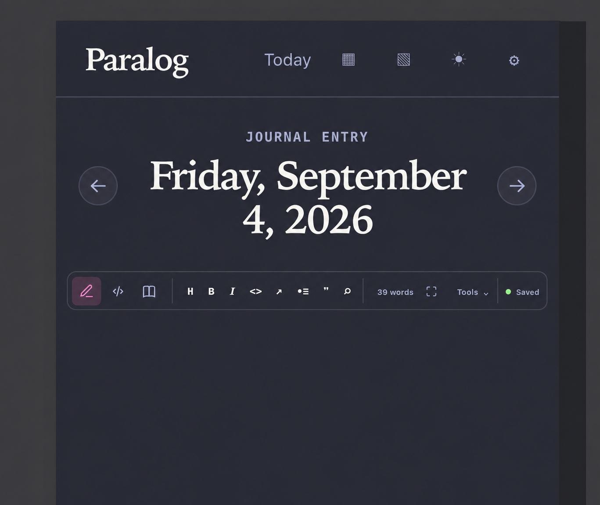
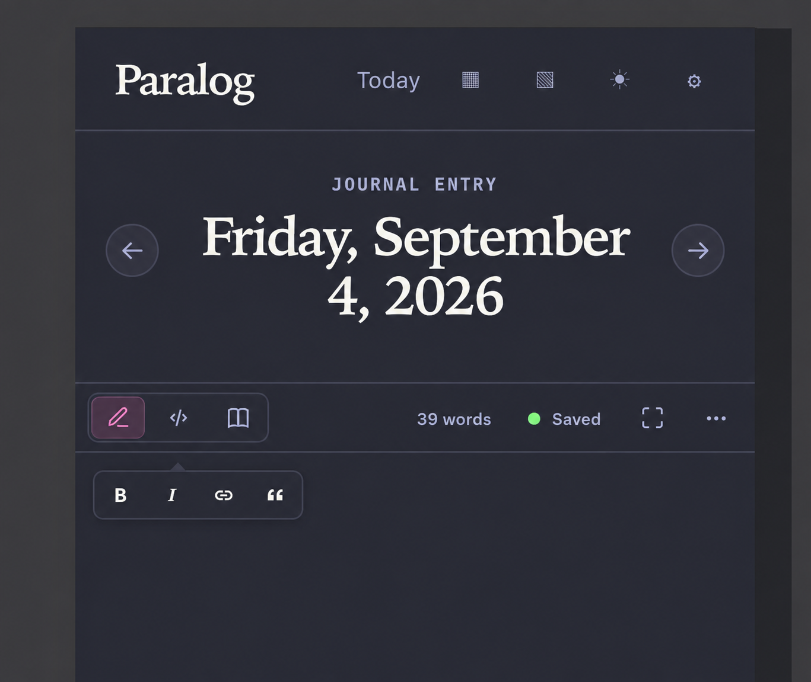
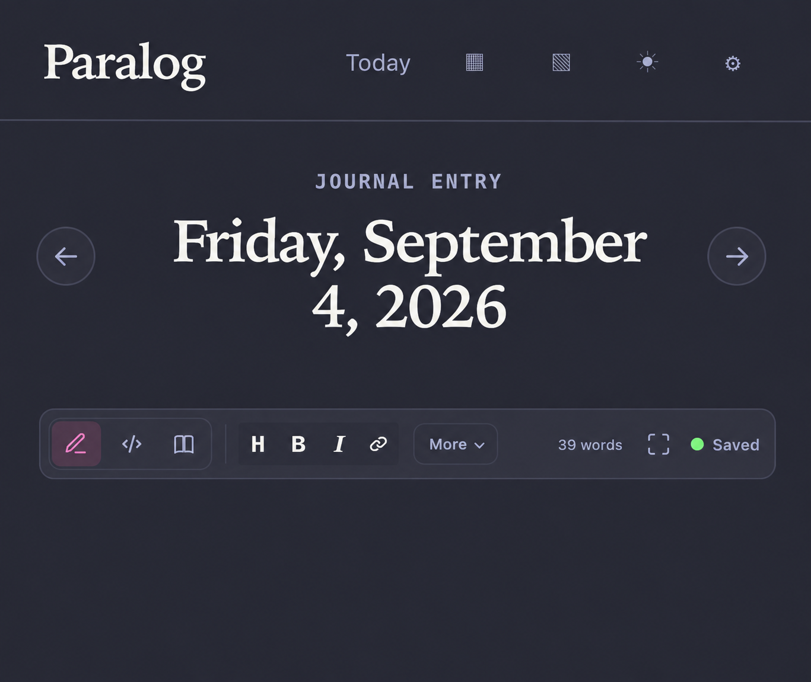

Editor bar options
Three ways to combine save state, view controls, and Markdown formatting.
Option A: unified bar
Every command remains visible in one row. Best for quick access on wide screens.

Option B: contextual formatting
The fixed bar stays minimal. Formatting appears only when text is selected.

Option C: essentials plus More My pick
Common formatting stays visible. Less-used commands move into More.
